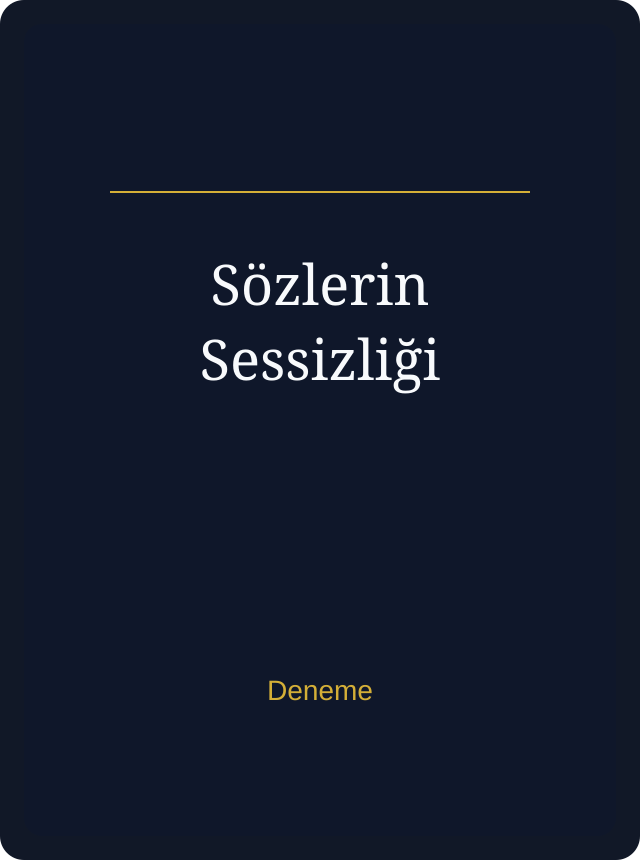

Karanlıktan Işığa
Çocuk yaşta çalışma hayatı, madencilik yılları, kayıplar ve yeniden inşa edilen bir yaşam: İlker Kara'nın kendi hayatından beslenen güçlü bir kişisel yolculuk.
Yayımlanan Eser
Henüz tek kitabım yayımlandı. Bu eser, yaşanmışlıkların içinden süzülen umut, mücadele ve dönüşüm hikayesini anlatıyor.

Çocuk yaşta çalışma hayatı, madencilik yılları, kayıplar ve yeniden inşa edilen bir yaşam: İlker Kara'nın kendi hayatından beslenen güçlü bir kişisel yolculuk.